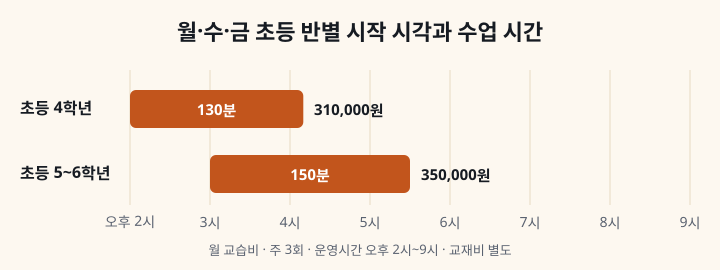

몇 시에 시작하고 몇 시에 끝나나요?
초등 4학년반은 오후 2시, 5~6학년반은 오후 3시에 시작합니다. 수업 시간으로 셈하면 4학년반은 오후 4시 10분, 5~6학년반은 오후 5시 30분 무렵 끝납니다. 두 반 모두 월·수·금 주 3회입니다.
위 시간은 지금 운영하는 기준입니다. 정원과 학년에 따라 배정이 달라질 수 있어서, 실제로 들어갈 수 있는 시간은 상담 때 확인해 드립니다. 교습소 운영시간은 오후 2시부터 9시까지입니다. 반별 수업 내용은 초등 영어 정규반 안내에 있습니다.
교습비에 무엇이 들어가나요?
월 교습비에는 주 3회 정규 수업, 수업 중 확인 학습(체킹)과 첨삭, 과제 안내와 학습태도 기록이 들어갑니다. 교습비는 교육청에 신고된 기준대로 공개합니다. 반별 표와 교습비 반환 기준은 수강료·시간 안내에 있습니다.
교습비 말고 따로 안내드리는 것은 두 가지입니다. 교재비, 그리고 추가 특강 같은 별도 과정을 운영할 때의 비용입니다. 주 3회 정규반만 다닌다면 월 교습비에 교재비를 더해 보시면 됩니다.
교재비는 따로인가요?
따로입니다. 교재는 저희가 직접 만든 자체 교재이고, 첫 수업에서 학생 상태를 본 뒤 단계를 정해 구매 링크를 보내 드립니다. 구매는 학부모님께서 직접 하시고, 교습소에서는 교재를 판매하지 않습니다. 교재 가격은 상담 때 알려 드립니다.
레벨테스트는 상담 전에 따로 보지 않고, 등록 후 첫날 수업에서 봅니다. 그래서 어느 단계 교재를 쓸지는 등록한 뒤에 정해집니다. 초등 4~6학년에 해당하는 씨앗 단계는 짧은 글을 소리 내어 읽는 리딩 교재로 시작합니다.
이런 경우엔 안 맞습니다
주 1~2회만 다니려는 경우입니다. 지금 운영하는 초등 반은 월·수·금 주 3회 두 반입니다. 교습비 게시표에는 다른 횟수의 과목도 등록되어 있지만, 실제 개설 여부와 시간은 상담 때 안내드립니다.
초등 3학년 이하 반은 지금 없습니다. 초등 반은 4학년과 5~6학년으로 나뉩니다. 과제를 챙길 시간이 없는 경우도 어렵습니다. 집에서 한 번 더 확인하는 과제가 나가고, 해 오지 않으면 다음 수업의 체킹에서 통과하기 어렵습니다.
상담 때 확인할 것
교재 가격, 실제로 들어갈 수 있는 시간, 그 시간대 인원입니다. 셋 다 상담 때 알려 드립니다. 반 정원은 교육청에 신고한 7명입니다. 다른 곳과 비용을 비교하실 때는 월 금액만 맞대지 말고 주 몇 회, 회당 몇 분인지까지 같이 놓고 보셔야 합니다. 저희는 4학년반이 주 3회 130분, 5~6학년반이 주 3회 150분입니다. 상담 때 물어볼 것은 상담 때 무엇을 물어봐야 하는지에 더 있습니다.